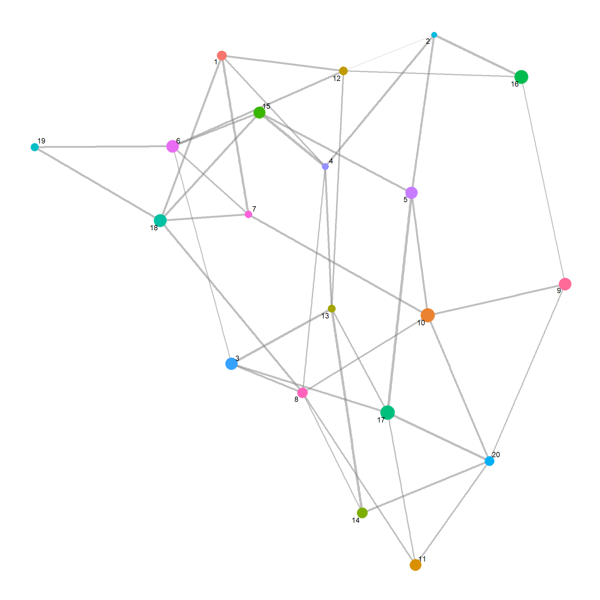
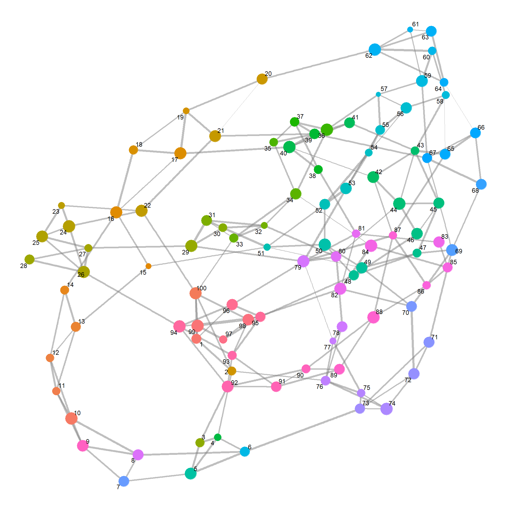
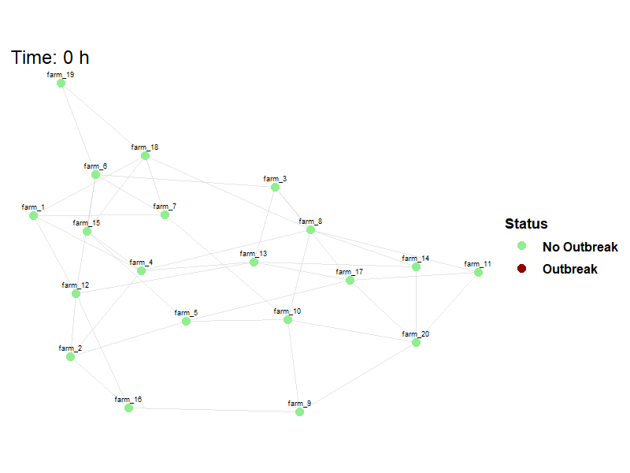

Between-Farm Transmission
Description
The challengeABM package includes the simulate_net_model() function that accepts a networkis calibrated to exhibit the same within-host virus dynamics as the simulate_room_to_room() function uses for laboratory based animal experiments. At simulation start, cattle (agents) are populated to a common area with a specified number of FMDV infected individuals. On simulation hour 1, cattle begin making random contact with each other at a specified hourly rate to show homogeneous mixing.
Depending on the quantity of virus in the donor cattle and chance contacts, they may or may not infect others. The quantity of virus in nasal passages and in blood serum has been calibrated to match the experimental study described in the analysis with parameters recorded in the default_herd_config.yaml configuration file that is available with this script.
challengeABM Package
Simulation code is available here: challengeABM. The GitHub site includes an Overview, Design concepts, Details document.
Hide code
# library(remotes)
# remotes::install_github("geoepi/challengeABM")
library(challengeABM)Read Configuration File
Hide code
config_file <- read_yaml(here("config/base_config_fmdv.yaml"))Generate Network
The generate_farm_network() function is used to create a graph network representing the spatial relationships between farms and number of cattle in each. Nodes in the network represent farms and edges are proportional to the distance between those farms. The returned list() includes a randomized $graph network object and a $farm_df data frame with the farm labels and cattle number.
Using parameters in the configuration file:
Randomized spatial arrangement
Hide code
net <- generate_farm_network(config_file)
plot_base_network(net$graph)
Randomized number of cattle
Hide code
# dimensions
dim(net$farm_df)[1] 20 3Hide code
# peek at data
head(net$farm_df)| farm_id | node_id | herd_size |
|---|---|---|
| farm_1 | 1 | 277 |
| farm_2 | 2 | 107 |
| farm_3 | 3 | 572 |
| farm_4 | 4 | 119 |
| farm_5 | 5 | 552 |
| farm_6 | 6 | 598 |
Hide code
# cattle numbers
range(net$farm_df$herd_size)[1] 107 935Or alternatively using overrides:
Hide code
net_2 <- generate_farm_network(config_file,
n_farms = 100,
graph_type = "smallworld",
herd_size_range = c(1000, 5000),
seed = 12345)
plot_base_network(net_2$graph)
Hide code
# dimensions
dim(net_2$farm_df)[1] 100 3Hide code
# peek at data
head(net_2$farm_df)| farm_id | node_id | herd_size |
|---|---|---|
| farm_1 | 1 | 2881 |
| farm_2 | 2 | 2152 |
| farm_3 | 3 | 2270 |
| farm_4 | 4 | 1432 |
| farm_5 | 5 | 4383 |
| farm_6 | 6 | 2880 |
Hide code
# cattle numbers
range(net_2$farm_df$herd_size)[1] 1043 4955Run Simulation
The simulate_net_model() functions accepts the network and disease parameters from the config file and runs the simulation. This parameterization takes 3-5 minutes to run, therefore a copy is saved for reload.
Hide code
model_result <- simulate_net_model(net, config_file)
saveRDS(model_result, here("local/demo/model_result_2025-06-13.rds"))Download saved copy from OSF
Hide code
osf_id <- osf_project_demo %>%
osf_ls_files() %>%
filter(name == "model_result_2025-06-13.rds") # file to download
osf_download(osf_id,
path = here("local/temp"), # where to save
conflicts = "overwrite")| name | id | local_path | meta |
|---|---|---|---|
| model_result_2025-06-13.rds | 684cbc31fea3288c3ab687ad | local/temp/model_result_2025-06-13.rds | model_result_2025-06-13.rds , file , /684cbc31fea3288c3ab687ad , 4172117 , osfstorage , /model_result_2025-06-13.rds , 1749859377 , 1749859377 , 274f06b6116b3d5bfe1088de8649938f , de11d00cab4e4f25dc259ee39b7567bfb0785b581447460e5f060a45fb15f0bf , 0 , TRUE , 1 , FALSE , https://api.osf.io/v2/files/684cbc31fea3288c3ab687ad/ , https://files.osf.io/v1/resources/qf2wr/providers/osfstorage/684cbc31fea3288c3ab687ad , https://files.osf.io/v1/resources/qf2wr/providers/osfstorage/684cbc31fea3288c3ab687ad , https://files.osf.io/v1/resources/qf2wr/providers/osfstorage/684cbc31fea3288c3ab687ad , https://osf.io/download/684cbc31fea3288c3ab687ad/ , https://mfr.osf.io/render?url=https%3A%2F%2Fosf.io%2Fdownload%2F684cbc31fea3288c3ab687ad%2F%3Fdirect%26mode%3Drender, https://osf.io/qf2wr/files/osfstorage/684cbc31fea3288c3ab687ad , https://api.osf.io/v2/files/684cbc31fea3288c3ab687ad/ , https://api.osf.io/v2/files/684cb2aed0a256104638874a/ , 684cb2aed0a256104638874a , files , https://api.osf.io/v2/files/684cbc31fea3288c3ab687ad/versions/ , https://api.osf.io/v2/nodes/qf2wr/ , qf2wr , nodes , https://api.osf.io/v2/nodes/qf2wr/ , nodes , nodes , qf2wr , https://api.osf.io/v2/files/684cbc31fea3288c3ab687ad/cedar_metadata_records/ |
Hide code
# read save file to environment
model_result <- readRDS(here("local/temp/model_result_2025-06-13.rds"))Examine returned object. The returned object is a nested list, with dataframes for each farm and animal at each time step.
Hide code
length(model_result)[1] 3Hide code
names(model_result)[1] "farm_status" "movement_log" "quarantine_log"Hide code
names(model_result$farm_status)[1] "herd_agents" "herd_states" "quarantined"Hide code
names(model_result$farm_status$herd_agents) [1] "farm_1" "farm_2" "farm_3" "farm_4" "farm_5" "farm_6" "farm_7"
[8] "farm_8" "farm_9" "farm_10" "farm_11" "farm_12" "farm_13" "farm_14"
[15] "farm_15" "farm_16" "farm_17" "farm_18" "farm_19" "farm_20"Hide code
names(model_result$farm_status$herd_agents$farm_1) [1] "id" "infection_status"
[3] "infect_agent" "is_donor"
[5] "virus_nasal" "virus_serum"
[7] "score_t" "nasal_threshold"
[9] "serum_threshold" "infect_threshold"
[11] "dose" "infectious_t"
[13] "growth_rate_nasal" "growth_rate_serum"
[15] "clearance_rate" "stochastic_noise"
[17] "exponential_factor" "inflection_point_nasal"
[19] "inflection_point_serum" "inflection_point_absolute_nasal"
[21] "inflection_point_absolute_serum" "growth_cease"
[23] "nasal_ccap" "serum_ccap"
[25] "infection_time" "score"
[27] "recovery_time" "has_recovered"
[29] "infector_id" "preclin_onset"
[31] "preclin_dur" "clinical_dur"
[33] "transmitter_state" "time_since_infection"
[35] "state" Extract Stats
Pulling a few statistics from the simulation using extract_net_simulation_summary(). Note that functions such as calculate_R0_from_network() are available to calculate stats from a series of literately run models.
Basic stats:
- R_farm: Farm-level reproduction estimated by outgoing node edges in network.
- outbreak_farms: Total number of farms with outbreaks in this demo simulation.
- first_infection_time: Time when first infection was detected.
- total_infected_at_first: Total animals infected at time first animal was detected (i.e., some undetected).
- total_infected_animals: Total infected animals over course of outbreak.
Hide code
extract_net_simulation_summary(model_result)| R_farm | outbreak_farms | first_infection_time | total_infected_at_first | total_infected_animals |
|---|---|---|---|---|
| 3.285714 | 14 | 14 | 2 | 7775 |
Animation
Viewing between farm disease spread.
Hide code
animate_spread(net=net,
farm_states = model_result$farm_status$herd_states,
move_df = dplyr::bind_rows(model_result$movement_log),
output_file = here("images/spread.gif")
)Hide code
knitr::include_graphics(here("images/spread.gif"))